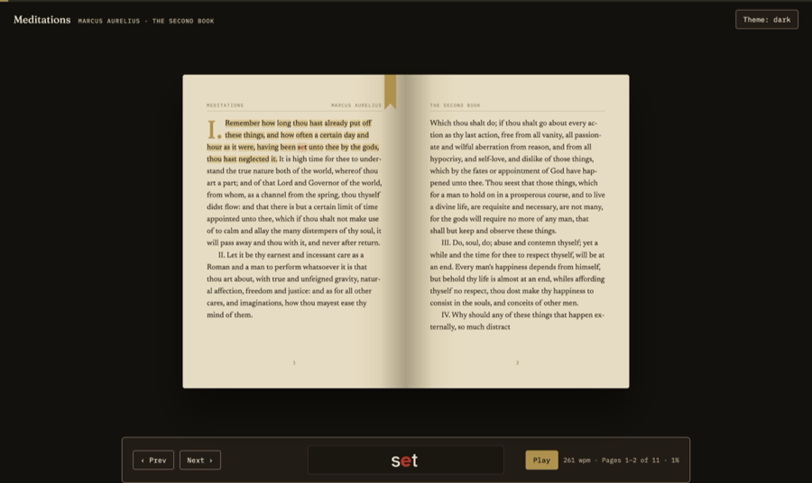
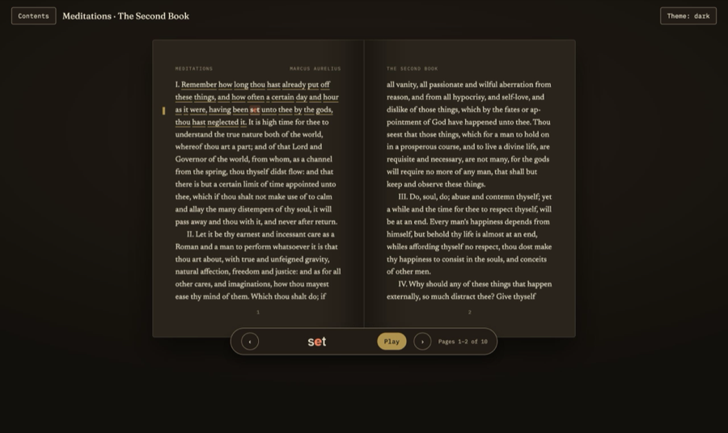
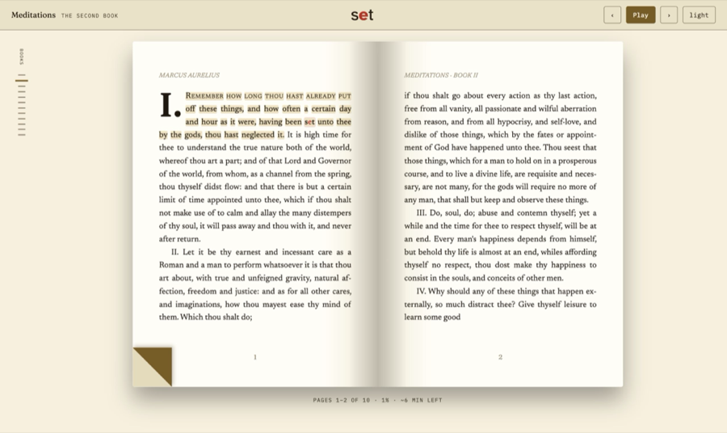
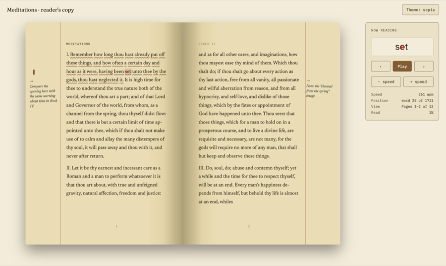
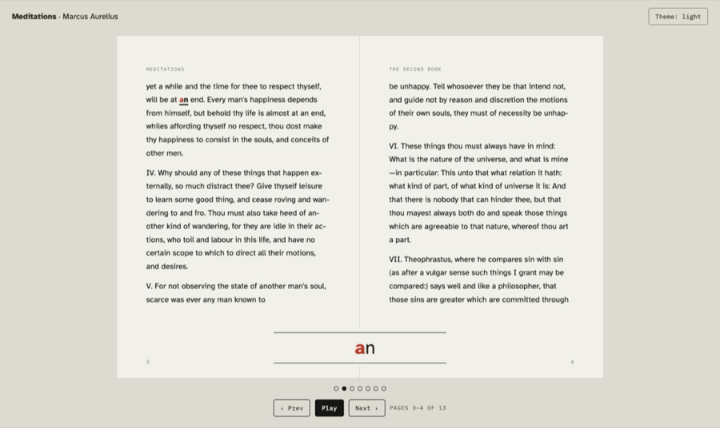
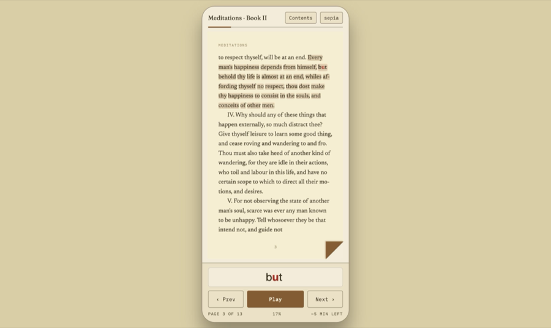
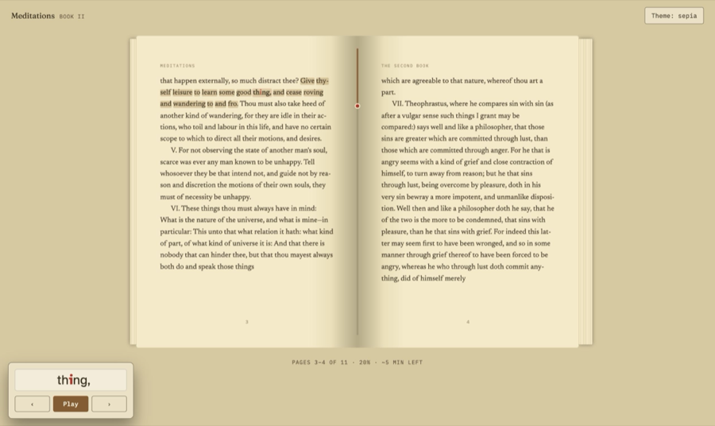
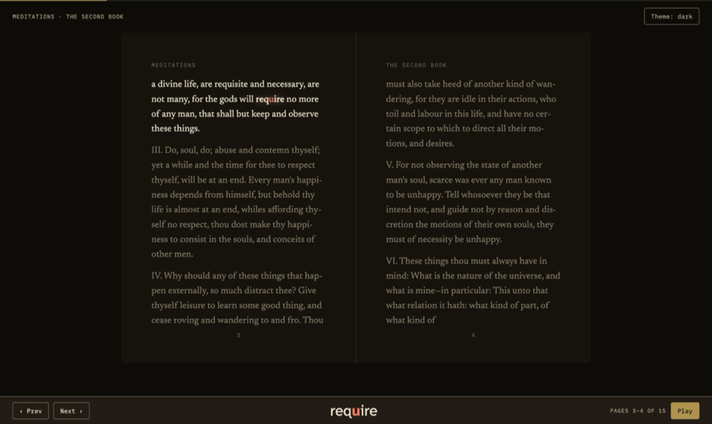
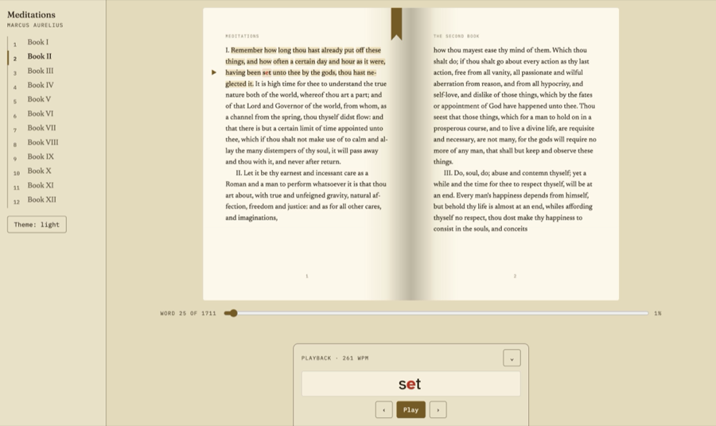
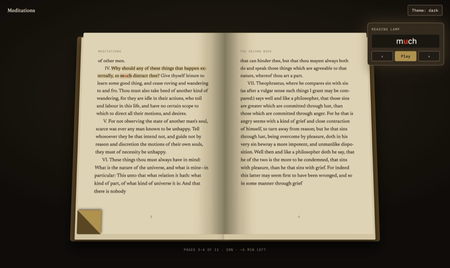

The reading view as a rendered two-page book, separate from the landing page. The RSVP playback head is its own element and the current word's red focus letter shows in both the head and the book text. Each mockup turns pages (arrow keys or click a page), plays a demo word (space), and switches theme (T). Text is from Meditations (Marcus Aurelius, public domain).

Cream paper spread on a dark desk. Ribbon bookmark hangs from the head of the page being read, a soft highlighter band marks the sentence, and the playback head docks in a wide bar under the book.

Dark vellum pages for evening reading. A gold margin tick and a quiet underline follow the sentence; the playback head is a floating pill hung under the gutter; contents slide in from the left.

Editorial typesetting: drop cap, small-caps opening, running heads and folios. The playback head is a header strip across the top, a chapter rail runs down the left edge, and the current page gets a folded corner plus a highlighter band.

A reader’s manuscript: wide outer margins carry handwritten-style notes, a ruled margin line, a margin tick and a pen underline mark the passage. The playback head lives in a side panel beside the book.

Flat, quiet, high-legibility pages in Atkinson Hyperlegible. Only the current word carries a heavy underline; the playback head sits in the bottom margin straddling the gutter; progress is a row of page dots.

Phone-first: one page at a time with the same ideas. The leaf turns from the left edge, tap the page edges to turn, the playback head and a big play button live in the thumb zone, and contents open as a bottom sheet.

The book itself shows progress: page-stack edges thicken and thin as you read, and a gauge runs down the gutter with a dot at the line you are on. A highlighter band marks the sentence; the playback head floats as a small picture-in-picture card in the lower left.

Focus mode: larger type, text already read and still to come recede, and only the current sentence is lit. The playback head is a slim full-width bar along the bottom edge; a hairline progress line runs across the top.

A navigator’s layout: a chapter rail down the left, a word scrubber under the book, and a ribbon plus a margin arrow that points at the line being read. The playback head is a lectern tab that slides up from the bottom edge and collapses to a tab.

The most physical one: the whole book tilts back on the desk with visible page-stack edges and deep curl shading on every turn. A dog-eared corner marks the page being read, a thin band marks the sentence, and a small reading-lamp card holds the playback head.